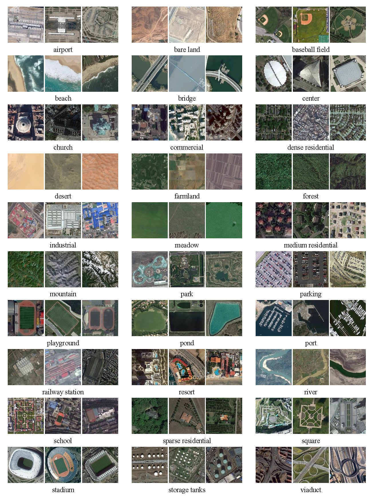
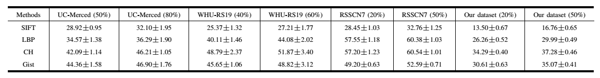
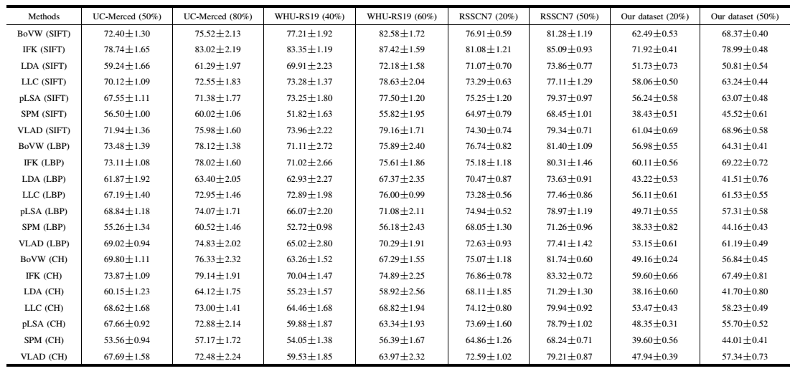
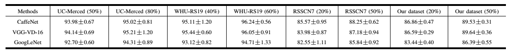

<html xml:lang="en" xmlns="http://www.w3.org/1999/xhtml"><head><meta http-equiv="Content-Type" content="text/html; charset=utf-8">
<meta charset="utf-8">
    
<title>AID: A Benchmark Dataset for Performance Evaluation of Aerial Scene Classification</title>
    
    <style>
        h1 { padding : 0; margin : 0 auto; text-align : center;}
        body { padding : 0; font-family : Arial; font-size : 16px; }
        #container { width : 980px; margin : 10px auto;  background-color : #fff; padding : 50px; box-shadow: 0px 0px 10px #000; border-radius: 15px;  } 
        #me { border : 0 solid black; margin-bottom : 0;}
        #content { display : block;}
        a { text-decoration : none; }
        a:hover { text-decoration : underline; }
        a:visited { color : blue; }
        a.invisible { color : inherit; text-decoration : inherit; }
        .publogo { margin-right : 10px; float : left; border : 0;}
        .publication { clear : left; padding-bottom : 0px;}
        .publication p { height : 100px; }
        .codelogo { margin-right : 10px; float : left; border : 0;}
        .code { clear : left; padding-bottom : 10px; vertical-align :middle;} 
        .code .download a { display : block; margin : 0 15px; float : left;}
        #simpsons { margin : 5px auto; text-align : left; color : #B7B7B7; }
        #erdos { color : #999; text-align : center; font-size : 12px; }
        .contact { margin-left : 40px; }
        .contact td { width : 300px; vertical-align : top; }
        .schoollogo { text-align : center; color : #999; width : 150px;}
        .schoollogo img { margin-bottom : 10px; }
        body {
        background-color : rgb(100,100,100); /*UCLA bgcolor*/
        }
    </style>	
    
</head>

<body>

<div id="container">

<div id="content">

<h1>	AID: A Benchmark Dataset for Performance Evaluation of Aerial Scene Classification</h1>
<p style="text-align:center;margin-bottom:30px;">
   <a href="https://sites.google.com/site/link2xgs">Gui-Song Xia</a><sup>1</sup>,
   Jingwen Hu<sup>1,2</sup>,  
   Fan Hu<sup>1,2</sup>,
   Baoguang Shi<sup>3</sup>,
   <a href='http://mc.eistar.net/~xbai/'>Xiang Bai</a><sup>3</sup>,
   <a href='http://www.lmars.whu.edu.cn/prof_web/zhongyanfei/e-index.html'>Yanfei Zhong</a><sup>1</sup>,
   <a href="http://www.lmars.whu.edu.cn/prof_web/zhangliangpei/rs/index.html">Liangpei Zhang</a><sup>1</sup><br><br>

<span style="font-style:italic">
   1. State Key Lab. LIESMARS, Wuhan University, Wuhan 430079, China<br>
   2. EIS, Wuhan University, Wuhan, 430079, China<br>
   3. EIC, Huazhong University of Science and Technology, Wuhan 430074, China.
</span> 
    <br><br>

    <span style="font-style:italic, oblique; color:red">
        published on IEEE Trans. on Geoscience and Remote Sensing, Vol. 55, No.7, pp.3965 - 3981, 2017. 
    </span>

</p>

<h2>- Abstract -</h2>
<p style="text-align:justify;margin-bottom:10px;">Aerial scene classification, which aims to automatically label an aerial image with a specific semantic category, is a fundamental problem for understanding high-resolution remote sensing imagery. In recent years, it has become a dynamic task in remote sensing area and numerous algorithms have been proposed for this task, including many machine learning and data-driven approaches. However, the existing datasets for aerial scene classification like UC-Merced dataset and WHU-RS19 are with relatively small sizes, and the results on them are already saturated. This largely limits the development of scene classification algorithms.
This paper describes the Aerial Image Dataset (AID): a large-scale dataset for aerial scene classification.
The goal of AID is to advance the state-of-the-arts in scene classification of remote sensing images. For creating AID, we collect and annotate more than ten thousands aerial scene images. In addition, a comprehensive review of the existing aerial scene classification techniques as well as recent widely-used deep learning methods is given. Finally, we provide a performance analysis of typical aerial scene classification and deep learning approaches on AID, which can be served as the baseline results on this benchmark.
</p>

<h2 style="text-align:justify;margin-bottom:10px;">- AID: a new dataset - (download on <a href="https://1drv.ms/u/s!AthY3vMZmuxChNR0Co7QHpJ56M-SvQ">Onedrive</a> or <a href="https://pan.baidu.com/s/1mifOBv6">BaiduPan</a>)</h2>
<div style="text-align:justify;margin-bottom:10px;">   
    AID is a new large-scale aerial image dataset, by collecting sample images from Google Earth imagery.
    Note that although the Google Earth images are post-processed using RGB renderings from the original optical aerial images, it has proven that there is no significant difference 
    between the Google Earth images with the real optical aerial images even in the pixel-level land use/cover mapping. 
    Thus, the Google Earth images can also be used as aerial images for evaluating scene classification algorithms. <br>
<p> 
The new dataset is made up of the following 30 aerial scene types: 
    <span style="font-style:italic">airport, bare land, baseball field, beach, bridge, center, church, commercial, dense residential, desert, farmland, forest, industrial, meadow, medium residential, 
    mountain, park, parking, playground, pond, port, railway station, resort, river, school, sparse residential, square, stadium, storage tanks and viaduct</span>. All the images 
    are labelled by the specialists in the field of remote sensing image interpretation, and some samples of each class are shown in Fig.1.
In all, the AID dataset has a number of 10000 images within 30 classes.<br>
</p>
<p> 
The images in AID are actually multi-source, as Google Earth images are from different remote imaging sensors. This brings more challenges for scene classification than 
    the single source images like UC-Merced dataset.

Moreover, all the sample images per each class in AID are carefully chosen from different countries and regions around the world, mainly in <span style="font-style:italic">China, the United States, 
    England, France, Italy, Japan, Germany</span>, etc., and they are extracted at different time and seasons under different imaging conditions, which increases the intra-class 
    diversities of the data.  

Some samples of each class are shown in Fig.1.
    </p>
</div>

<!--
<table><tr>
<table><tr><th><td valign=top align=center width=0>
<td align=center>airport<br><a href="Airport.html"></a> </td><th><td valign=top align=center width=0>
<td align=center>bareland<br><a href="BareLand.html"></a> </td><th><td valign=top align=center width=0>
<td align=center>baseballfield<br><a href="BaseballField.html"></a> </td><th><td valign=top align=center width=0>
<td align=center>beach<br><a href="Beach.html"></a> </td><th><td valign=top align=center width=0>
<td align=center>bridge<br><a href="Bridge.html"></a> </td><th><td valign=top align=center width=0>
<tr>
<th><td valign=top align=center width=0>
<td align=center>center<br><a href="Center.html"></a> </td><th><td valign=top align=center width=0>
<td align=center>church<br><a href="Church.html"></a> </td><th><td valign=top align=center width=0>
<td align=center>commercial<br><a href="Commercial.html"></a> </td><th><td valign=top align=center width=0>
<td align=center>denseresidential<br><a href="DenseResidential.html"></a> </td><th><td valign=top align=center width=0>
<td align=center>desert<br><a href="Desert.html"></a> </td><th><td valign=top align=center width=0>
<tr>
<th><td valign=top align=center width=0>
<td align=center>farmland<br><a href="Farmland.html"></a> </td><th><td valign=top align=center width=0>
<td align=center>forest<br><a href="Forest.html"></a> </td><th><td valign=top align=center width=0>
<td align=center>industrial<br><a href="Industrial.html"></a> </td><th><td valign=top align=center width=0>
<td align=center>meadow<br><a href="Meadow.html"></a> </td><th><td valign=top align=center width=0>
<td align=center>mediumresidential<br><a href="MediumResidential.html"></a> </td><th><td valign=top align=center width=0>
<tr>
<th><td valign=top align=center width=0>
<td align=center>mountain<br><a href="Mountain.html"></a> </td><th><td valign=top align=center width=0>
<td align=center>park<br><a href="Park.html"></a> </td><th><td valign=top align=center width=0>
<td align=center>parking<br><a href="Parking.html"></a> </td><th><td valign=top align=center width=0>
<td align=center>playground<br><a href="Playground.html"></a> </td><th><td valign=top align=center width=0>
<td align=center>pond<br><a href="Pond.html"></a> </td><th><td valign=top align=center width=0>
<tr>
<th><td valign=top align=center width=0>
<td align=center>port<br><a href="Port.html"></a> </td><th><td valign=top align=center width=0>
<td align=center>railwaystation<br><a href="RailwayStation.html"></a> </td><th><td valign=top align=center width=0>
<td align=center>resort<br><a href="Resort.html"></a> </td><th><td valign=top align=center width=0>
<td align=center>river<br><a href="River.html"></a> </td><th><td valign=top align=center width=0>
<td align=center>school<br><a href="School.html"></a> </td><th><td valign=top align=center width=0>
<tr>
<th><td valign=top align=center width=0>
<td align=center>sparseresidential<br><a href="SparseResidential.html"></a> </td><th><td valign=top align=center width=0>
<td align=center>square<br><a href="Square.html"></a> </td><th><td valign=top align=center width=0>
<td align=center>stadium<br><a href="Stadium.html"></a> </td><th><td valign=top align=center width=0>
<td align=center>storagetanks<br><a href="StorageTanks.html"></a> </td><th><td valign=top align=center width=0>
<td align=center>viaduct<br><a href="Viaduct.html"></a> </td><th><td valign=top align=center width=0>
<tr>
</table></tr>
<div> <strong>Figure 1:</strong> Samples of the AID dataset: three examples of each semantic scene class 
are shown. There are 10000 images within 30 classes.</div>  -->


<p align="center"><a href="aid-dataset.png"></a><br> 
<strong>Figure 1:</strong> Samples of the AID dataset: three examples of each semantic scene class 
are shown.
</p>
<br>
    
<h2>- Experimental study -</h2>
<h3>- Baseline methods (code download on <a href="https://1drv.ms/u/s!AthY3vMZmuxCgoMeKeBUc-kZUiezDQ">Onedrive</a> or <a href="https://pan.baidu.com/s/1mifOBv6">BaiduPan</a>)</h3>
<p>
We evaluate the following three kinds of scene classification methods: <br>
<ol>
    <li>
    <strong>Low-level methods</strong>: <span style="font-style:italic">Scale Invariant Feature Transform (SIFT), Local Binary Pattern (LBP), Color Histogram (CH) and GIST. </span><br>
    </li>
    <li>
    <strong>Mid-level methods</strong>: <span style="font-style:italic">Bag of Visual Words (BoVW), Spatial Pyramid Matching (SPM), Locality-constrained Linear Coding (LLC), 
Probabilistic Latent Semantic Analysis (pLSA), Latent Dirichlet allocation (LDA), Improved Fisher kernel (IFK) and
Vector of Locally Aggregated Descriptors (VLAD) combined with three local feature descriptors (i.e., SIFT, LBP and CH).</span> <br>
    </li>
    <li>
    <strong>High-level methods</strong>:  <span style="font-style:italic">CaffeNet, VGG-VD-16 and GoogLeNet.</span><br>
    </li>
</ol>

<h3>- Testing datasets</h3>
We conduct the experiments on three popular scene classification datasets as well as our AID dataset: <br>  
<ol>
     <li>
         <a href="http://vision.ucmerced.edu/datasets/landuse.html">UC-Merced dataset</a>, 
         contains 21 scene classes and 100 samples of size 256x256 in each class.
     </li>
     <li>
         <a href="http://dsp.whu.edu.cn/cn/staff/yw/HRSscene.html"> WHU-RS19 dataset</a>, 
         has 19 different scene classes and 50 samples of size 600x600 in each class.
     </li>
     <li>
         <a href="https://sites.google.com/site/qinzoucn/documents">RSSCN7 dataset</a>, 
         contains 7 scene classes and 400 samples of size 400x400 in each class.
     </li>
     <li>
         <a href="AIDscene.html"> AID dataset</a>, 
         has 30 different scene classes and about 200 to 400 samples of size 600x600 in each class.
     </li>
</ol>
The AID dataset can be downloaded <a href="https://pan.baidu.com/s/1mifOBv6"> here</a>. <br>

<h3>- Evaluation protocols</h3>
To compare the classification quantitatively, we compute the common used measures: overall accuracy (OA), 
which is defined as the number of correctly predicted images divided by the total number of predicted images. 
It is a direct measure to reveal the classification performance on the whole dataset.<br>
<br>
To compute OA, we adopt two different settings for each tested dataset in the supervised classification process.
To compare the performances fairly, we adopt the Support Vector Machine (SVM) with linear kernel as our classifier.
For the RSSCN7 dadaset and our benchmark dataset, we fix the ratio of the number of training set to be 20% and 50%
respectively and the left for testing, while for UC-Merced dataset, the ratios are set to be 50% and 80% 
respectively. For the WHU-RS19 dataset, the ratios are fixed at 40% and 60% respectively. To compute the overall
accuracy, we randomly split the datasets into training sets and testing sets for evaluation, and repeat it ten 
times to reduce the influence of the randomness and obtain reliable results. The OA is computed for each run, 
and the final result is reported as the mean and standard deviation of OA from the individual run.

<h3>- Baseline results</h3>
<p align="center">
    <strong>Table.1. </strong>Overall accuracy (OA) of different low-level methods on the UC-Merced dataset,
the WHU-RS19 dataset, the RSSCN7 dataset and the AID dataset.
    <a href="low.png"></a><br> 
</p>

<p align="center">
    <strong>Table.2. </strong>Overall accuracy (OA) of different mid-level methods on the UC-Merced dataset,
the WHU-RS19 dataset, the RSSCN7 dataset and the AID dataset.
    <a href="mid.png"></a><br> 
 </p>

<p align="center">
    <strong>Table.3. </strong>Overall accuracy (OA) of different high-level methods on the UC-Merced dataset,
the WHU-RS19 dataset, the RSSCN7 dataset and the AID dataset.
    <a href="high.png"></a><br> 
 </p>
<br>

<h3>- Reference -</h3>
<ol>
   <li> G.-S. Xia, <span style="font-style:italic">et. al</span>. AID: A Benchmark Dataset for Performance Evaluation of Aerial Scene Classification, <span style="font-style:italic">IEEE Trans. on Geoscience and Remote Sensing, Vol. 55, No.7, pp.3965 - 3981, 2017</li>
   <li> Q. Hu, W. Wu, T. Xia, Q. Yu, P. Yang, Z. Li, and Q. Song, <span style="font-style:italic">Exploring the use of google earth imagery
and object-based methods in land use/cover mapping</span>, Remote Sensing, vol. 5, no. 11, pp. 6026-6042,2013.</li>
<li>  G. Cheng, J. Han, L. Guo, Z. Liu, S. Bu, and J. Ren, <span style="font-style:italic">Effective and efficient midlevel visual elementsoriented
land-use classication using vhr remote sensing images</span>, IEEE Transactions on Geoscience and
Remote Sensing, vol. 53, no. 8, pp. 4238{4249, 2015.</li>
<li> G. Cheng, J. Han, P. Zhou, and L. Guo, <span style="font-style:italic">Multi-class geospatial object detection and geographic image
classication based on collection of part detectors</span>, ISPRS Journal of Photogrammetry and Remote
Sensing, vol. 98, pp. 119{132, 2014.</li>
<li> F. Hu, G.-S. Xia, J. Hu, and L. Zhang, <span style="font-style:italic">Transferring deep convolutional neural networks for the scene
classication of high-resolution remote sensing imagery</span>, Remote Sensing, vol. 7, no. 11, pp. 14680-14707, 2015.</li>
<li> Y. Yang and S. Newsam, <span style="font-style:italic">Spatial pyramid co-occurrence for image classication</span>, in IEEE International
Conference on Computer Vision (ICCV). IEEE, 2011, pp. 1465-1472.</li>
<li> V. Risojevic and Z. Babic, <span style="font-style:italic">Fusion of global and local descriptors for remote sensing image classication</span>,
IEEE Geoscience and Remote Sensing Letters, vol. 10, no. 4, pp. 836-840, 2013.</li>
<li> Y. Yang and S. Newsam, <span style="font-style:italic">Geographic image retrieval using local invariant features</span>, IEEE Transactions
on Geoscience and Remote Sensing, vol. 51, no. 2, pp. 818-832, 2013.</li>
<li>  A. M. Cheriyadat, <span style="font-style:italic">Unsupervised feature learning for aerial scene classication</span>, IEEE Transactions on
Geoscience and Remote Sensing, vol. 52, no. 1, pp. 439-451, 2014.</li>
<li> L.-J. Zhao, P. Tang, and L.-Z. Huo, <span style="font-style:italic">Land-use scene classication using a concentric circle-structured
multiscale bag-of-visual-words model</span>, IEEE Journal of Selected Topics in Applied Earth Observations
and Remote Sensing, vol. 7, no. 12, pp. 4620-4631, 2014.</li>
<li> S. Chen and Y. Tian, <span style="font-style:italic">Pyramid of spatial relatons for scene-level land use classication</span>, IEEE Trans-
actions on Geoscience and Remote Sensing, vol. 53, no. 4, pp. 1947-1957, 2015.</li>
<li> J. Hu, T. Jiang, X. Tong, G.-S. Xia, and L. Zhang, <span style="font-style:italic">A benchmark for scene classication of high spatial
resolution remote sensing imagery</span>, in IEEE International Geoscience and Remote Sensing Symposium
(IGARSS). 2015, pp. 5003-5006.</li>
<li> F. Hu, G.-S. Xia, Z. Wang, X. Huang, L. Zhang, and H. Sun, <span style="font-style:italic">Unsupervised feature learning via spectral
clustering of multidimensional patches for remotely sensed scene classfication</span>, IEEE Journal of Selected
Topics in Applied Earth Observations and Remote Sensing, vol. 8, no. 5, pp. 2015-2030, 2015.</li>
<li> M. Castelluccio, G. Poggi, C. Sansone, and L. Verdoliva, <span style="font-style:italic">Land use classication in remote sensing
images by convolutional neural networks</span>, arXiv preprint arXiv:1508.00092, 2015.</li>
<li> O. A. B. Penatti, K. Nogueira, and J. A. dos Santos, <span style="font-style:italic">Do deep features generalize from everyday objects
to remote sensing and aerial scenes domains?</span>, in Proc. IEEE Conference on Computer Vision and
Pattern Recognition, June 2015.</li>
</ol>
 <!-- 
<h3>E. Discussion</h3>
From the above experimental results, we can summarize some interesting but meaningful observations as follows:
<ol>
     <li>
     By comparing various scene classification methods, we can observe the layered performances as the name 
     implies: low-level methods have relatively worse performances, while high-level methods perform better 
     on all the datasets, which shows the great potential of high-level methods.
     </li>
     <li>
     By comparing different scene classification datasets, we can find that our new dataset is far more 
     challenging than the others for it has relatively higher intra-class variations and smaller inter-class
     dissimilarity. In addition, the large numbers of sample images can help to evaluate various methods more
     precisely.
     </li>
</ol>-->

</div><br>


<!-- <p align="left"><a style ="text-decoration: underline;" href="../index.html"><- Back to Homepage</a></p>-->
<hr size="2">

<!-- Start of StatCounter Code -->
<script type="text/javascript">
    var sc_project=4056802; 
    var sc_invisible=1; 
    var sc_partition=50; 
    var sc_click_stat=1; 
    var sc_security="b7292327"; 
</script>

<script type="text/javascript" src="http://www.statcounter.com/counter/counter.js"></script><noscript><div class="statcounter"><a title="web stats" href="http://www.statcounter.com/" target="_blank"></a></div></noscript>
<!-- End of StatCounter Code -->

<div id="my_copyright">&#169Gui-Song Xia 2016</div>
